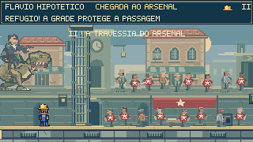
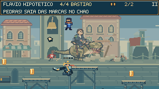
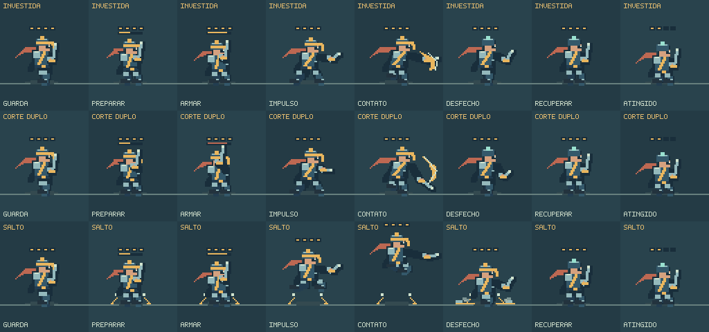

Da praça ao último bastião.
A perseguição desemboca numa reunião de NPCs na rua de Feka. Depois, quatro postos conectados formam a travessia do arsenal. O último traz uma defesa mais móvel — e a destruição ao fundo acompanha a chegada do jogador.
Jogar o encontro completoVer o novo confronto- ChegadaPraça e abrigos
- 01 · PortariaSalto e proteção
- 02 · CaisCarga e arcos
- 03 · ArsenalPressão em altura
- 04 · BastiãoMobilidade e resposta
Um respiro antes do combate.

A reunião tem faixa, mesa, papéis e equipamento de som. As pessoas procuram as portas laterais; as últimas demoram mais a sair. O primeiro portão começa a abrir antes, e os guardas continuam recolhidos até a passagem seguinte.
A rua mantém as cores, o movimento, os equipamentos e os controles do jogo. Os NPCs do primeiro plano e a ação da rua elevada têm posições e saídas próprias.
Um adversário que disputa as sacadas.
Trecho de 9,1 segundos retirado da execução nativa. A faixa de revisão contém disparos e destruição do cenário; música e os demais sons estão no jogo.
Vanguarda
Quatro pontos de resistência, proteção visível durante a preparação e retirada após receber dano. A crista clara indica a oportunidade de resposta. A sentada recompensa uma abertura bem aproveitada.
- Investida: avanço longo, direção comprometida e recuperação.
- Corte duplo: passo curto e uma segunda preparação antes de mudar a direção.
- Salto marcado: alcança apoios elevados; o destino fica fixo depois do aviso.
Arena do bastião
Quatro apoios em alturas diferentes oferecem aproximações por cima e espaço para cruzar ataques. O lançador cobre o lado oposto. Há equipamento na aproximação e retomada depois do posto anterior.
A torre, as arcadas, os suportes metálicos e a faixa que se desprende dão identidade ao último trecho. Ao vencer os dois defensores, o quarto portão libera a saída para o duelo.
O cenário espera você chegar.

Entrar num novo posto libera a entrada do chefe naquela rua. Se Feka demora, a próxima cena espera. Se avança rápido, contatos ainda não mostrados não viram ruínas automaticamente.
As ações aguardam enquanto o alvo sai do enquadramento, e a retomada conserva o cenário que foi realmente alterado. Depois da ação final, o chefe sai de cena.
Preparar, atacar, recuperar.

Prancha de inspeção do renderizador, separada da gravação jogada. Botas acompanham a distância percorrida; braço, lâmina e corpo retornam da preparação e do golpe de forma gradual.
Conferido no jogo.
204 testes selecionados e build de produção aprovados. A execução de 8.704 comandos de atualização chega à vitória com três mortes e retomadas, atravessando os quatro postos. O navegador não registrou erros; teclado, pausa, reinício e tela móvel de 390 pixels com movimento reduzido foram conferidos.
A execução confirma a travessia e as regras. A avaliação de dificuldade e ritmo ainda se beneficia de partidas de pessoas diferentes.
← → mover · Shift correr · Espaço pular · ↓ no ar sentada · Esc pausa · R retomar.
Registro de verificação · Execução nativa · Alterações e reprodução · Revisões anteriores